Я очнулся от головной боли такой силы, что меня вывернуло прямо с кровати.

Голова гудела так, что я едва соображал, перед глазами всё плыло — как после адской пьянки. Я помнил только фрагменты прошлой ночи, но их хватило, чтобы понять, что я прочитал.
Другие жители внезапно ворвались ко мне в дом.

Каким-то образом они прознали про документы. Меня выволокли из дома — там уже была готова яма, закопали по пояс и начали молотить копытами и когтями.
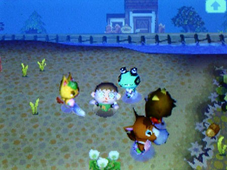
Я снова оказался в своей постели. Перед глазами всё плыло, и меня выворачивало. Я хотел потереть глаза, но нащупал бинты. Они меня знатно отмудохали, но потом залечили. Они не хотели моей смерти — они хотели сломать меня. Полголовы просто онемело от боли
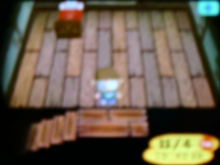
Каким-то образом мои мысли вернулись к Пенни. Если они могли сделать это со мной только за то, что я прочитал то, что не следовало, что бы они сделали с ней? Жива ли она? Это было почти невыносимо. Я должен был узнать, я должен был выяснить, всё ли с ней в порядке.
Мне удалось встать на ноги и, прихрамывая, спуститься вниз.
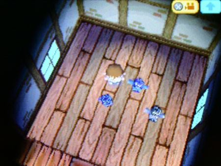
Я, честно говоря, не удивился, когда понял, что они забрали всё, что у меня было. Дом стоял пустой, только гироиды остались. Грёбаные уроды.
Ничего не поменялось. Жители делали вид, что ничего не случилось, они откровенно ржали надо мной, как будто мы вчера вечером чай с печеньем пили.
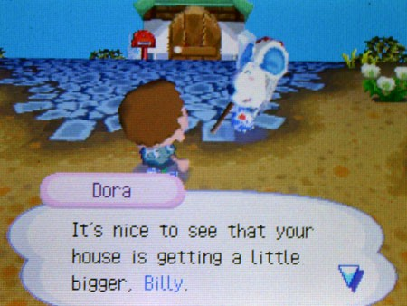
Я представлял, как вонзаю нож в их поганые рожи снова и снова. Мимо прошлёпал лошадиный житель. Он посмотрел на меня странно — с большей жалостью, чем я когда-либо видел от кого-то, кроме Кей Кея.
Он несмело приблизился и прошептал:
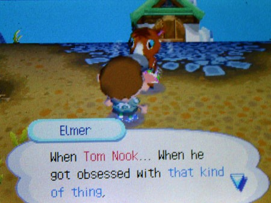
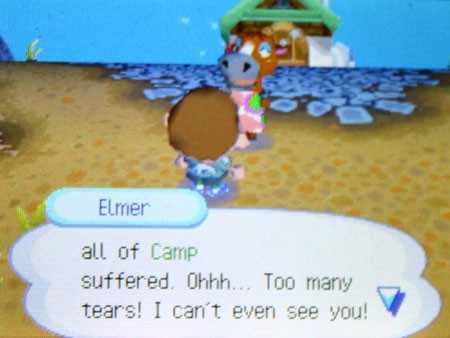
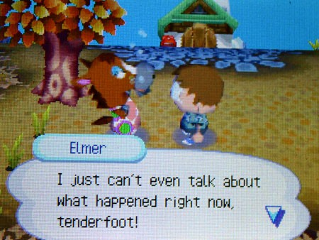
Мне было хреново, но вряд ли он извинялся за побои. Что он имел в виду под «этими штуками»? Про то, как Нук тебя, блядь, ЖРЁТ?! Внезапно меня накрыло новое онемение — и я понял, что оно не только душевное. Я перестал чувствовать левый глаз. Я коснулся повязки — она провалилась. Слишком глубоко. Они вырвали мне глаз.
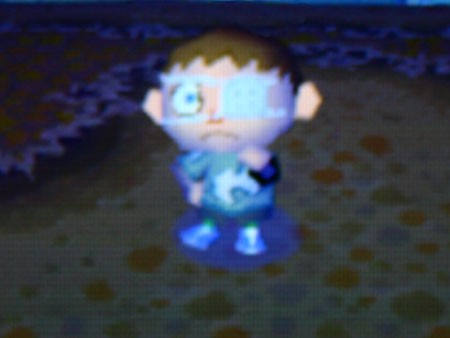
ОНИ ВЫРВАЛИ МОЙ БЛЯДСКИЙ ГЛАЗ.
Ещё месяц назад я бы рыдал до изнеможения. Я бы забился под одеяло и просил о скорой смерти. Нук просто дал мне понять, что я видел слишком много. Но я уже перестал бояться. Я ничего не чувствовал.
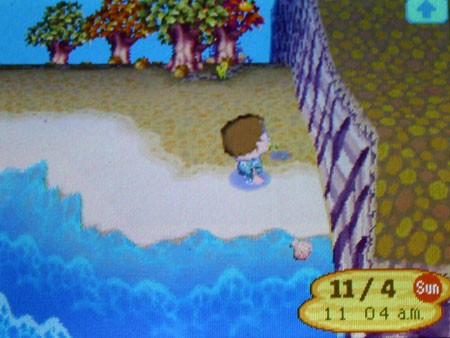
За следующие несколько дней я отправил за стену с десяток писем в ракушках — они там, наверное, уже горами лежат. Мне больше нечем было заняться. Я впал в жуткую апатию. Ничто не имело смысла. Моё существование было бессмысленным. Мне никогда не сбежать, и однажды всё, чем я был, станет просто куском дерьма, которое вывалит из себя Том Нук. Единственное, что не давало мне окончательно сдаться, — надежда, что Пенни ещё жива.
Я часами сидел и смотрел на восток, как статуя, представляя, как Пенни занимается своими делами, готовит шар с улыбкой и ждёт моего ответа. Я знал, что это не так. В лучшем случае её заперли и ведут слежку за ней. Но в голове мелькнула мысль: возможно, Нуку слишком важно, чтобы мы прошли «переход». Может, он не убивает своих жертв, потому что мы нужны ему больше, чем он нам. Даже в самые тёмные моменты надежда не умирает. Я знал, что не сдамся, пока не спасу Пенни.
Она бы сделала для меня то же самое.
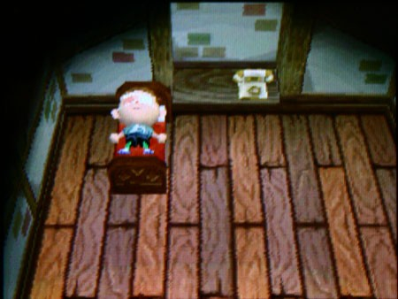
Прошла неделя. Депрессия и боль понемногу отступали, но взамен пришли кошмары — такие яркие, что я просыпался с криком через каждые несколько часов. Я и не удивлялся — моя жизнь и так была сплошным кошмаром. Одно утро выдалось особенно паршивым. Я не знал, как выглядит Пенни, но в голове раз за разом всплывал её крик — такой мучительный, что я просыпался в холодном поту. Когда я очнулся в тот день, голос затих в утреннем свете, и я понял: ждать больше нельзя. Внезапно я вспомнил то, что выбили из меня той ночью. Я знал, что делать.
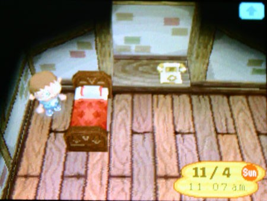
Я вспомнил про топор, который купил у Нука. Я спрятал его под кроватью на случай крайней нужды и молился, чтобы его не нашли. Они не нашли. Решил срубить несколько деревьев, сколотить плот и обогнуть скалистый берег до лагеря Пенни, выломать дверь, спасти её и уплыть в закат. Я знал, что это звучит идиотски и невозможно, но я устал от сложных планов и устал проигрывать. Я был готов действовать. Я бросал вызов любому, кто встанет на моём пути. Даже почти надеялся, что кто-то осмелится это сделать.
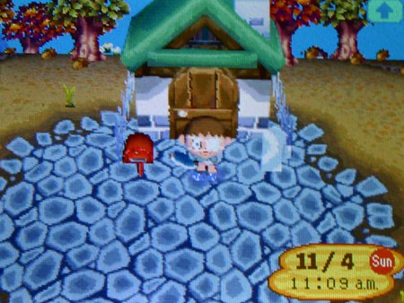
Солнце стояло высоко в небе, когда я направился к воде и начал рубить ближайшее дерево.
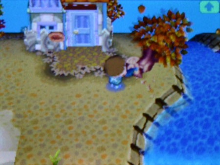
Я не только не привлёк внимания, но и вообще никого не видел весь день. Если честно, это было жутко, но я не стал зацикливаться на этом. Если они на совещании по охране порядка или на другой ерунде — только лучше.
Вся моя показная храбрость испарилась с первым же огоньком на горизонте.
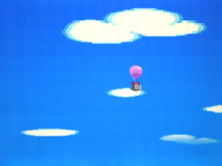
ШАР. Это казалось чем-то невозможным, но он висел там, тяжело надутый в небе. Рогатку я потерял, и видеть я стал из рук вон плохо, но я был готов перекидать все камни на острове, лишь бы сбить этот шар. Недолго пришлось ждать, прежде чем посылка шлёпнулась на землю с глухим стуком.
Я разорвал бумагу и нашёл обычный потрёпанный конверт. Она всегда писала мне на особой бумаге — с цветами. Это была не та бумага.

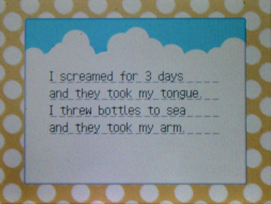
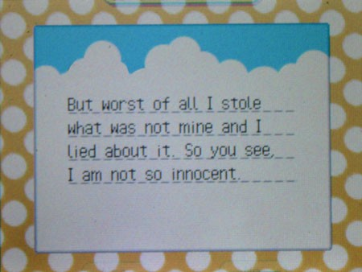
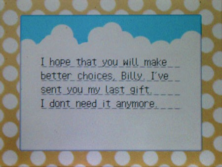
Что… за хуйня? Руки сами потянулись к коробке, я начал открывать её — и замер. Что-то было не так. Коробка просела набок, и бумага снизу казалась мокрой — как пакет из забегаловки, в котором лежит жирный бургер.

Внутри всё кричало: не трогай эту коробку. Уходи. В голове вопил голос: «НЕ ОТКРЫВАЙ! НЕ ОТКРЫВАЙ!» — и он царапал мозг, как ногти по доске. Я смотрел, как моя рука тянется к крышке, будто я не владею своим телом. Крышка упала набок.